A lightweight panel docked in a corner of your screen that handles two things: what you copied and what you type often. With search, text transforms, batch export, quick paste, and a full set of privacy-oriented clipboard handling.
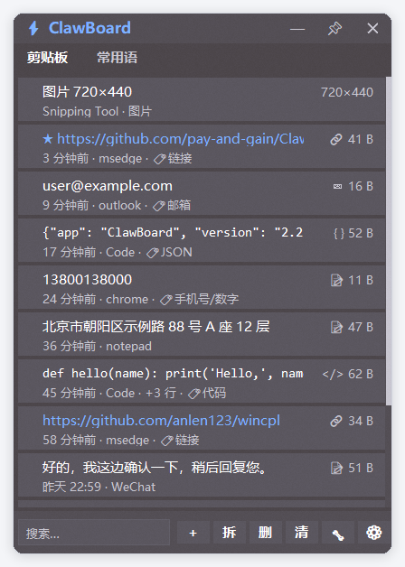
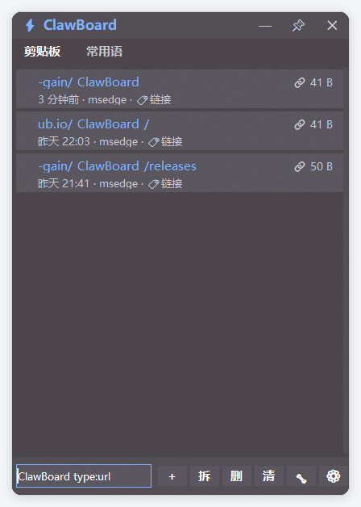
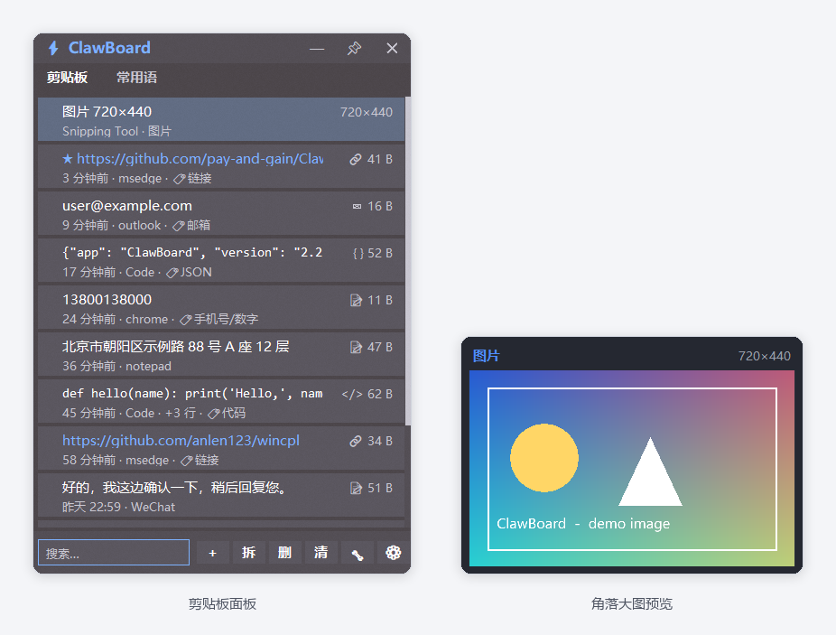
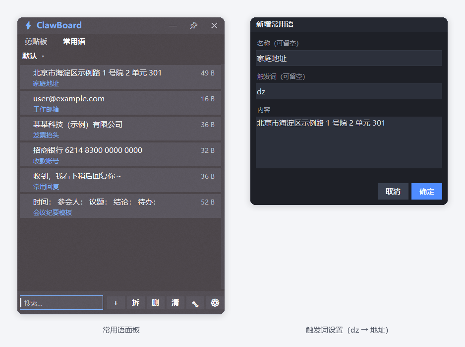
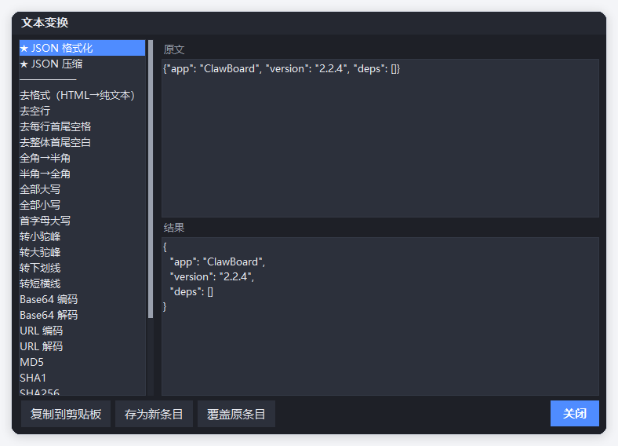
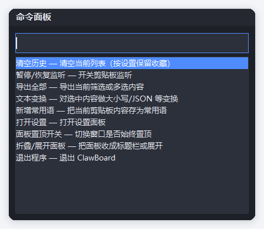
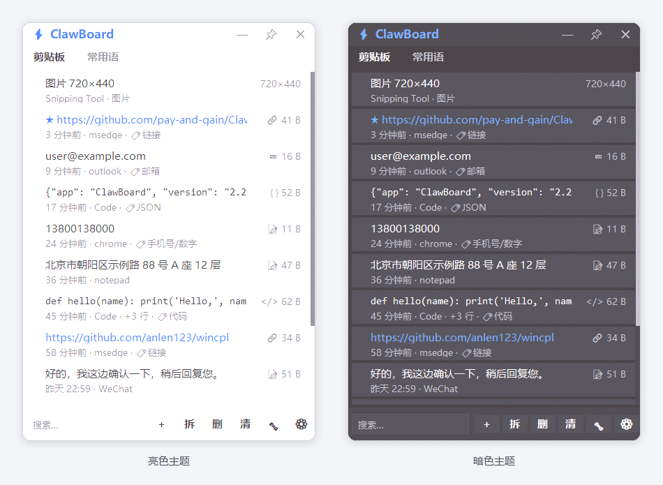
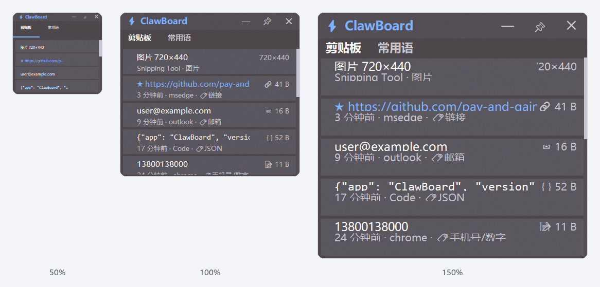
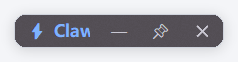
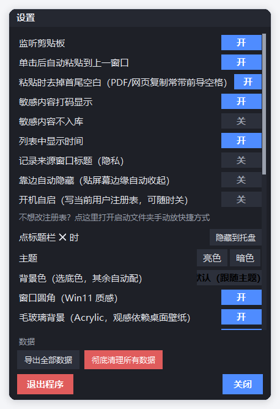
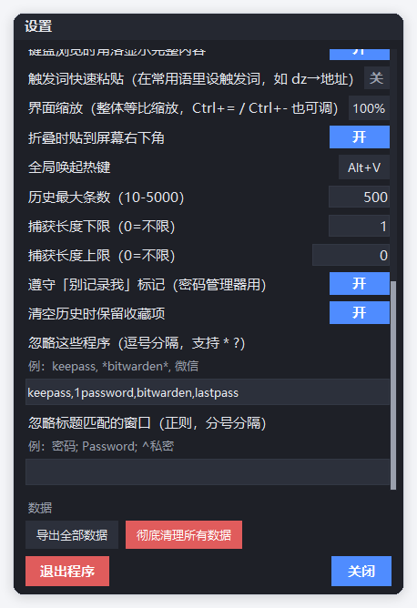
功能
Features
剪贴板历史自动记录、去重、上限裁剪、收藏；悬停看时间，右键看详情
Clipboard historyAuto capture, dedupe, configurable cap, starring; hover for time, right-click for details
常用语分组管理、拆词（一段文字批量切成多条）、增删改
PhrasesGroups, word split (one block → many phrases), full CRUD
高级搜索app:time:type:size:is:-排除，多词 AND + 高亮
Advanced searchapp:time:type:size:is:-exclude, multi-word AND + highlighting
27 项文本变换编解码、大小写、行处理、MD5/SHA1/SHA256、JSON 格式化…
27 text transformsEncode/decode, case, line ops, MD5/SHA1/SHA256, JSON formatting…